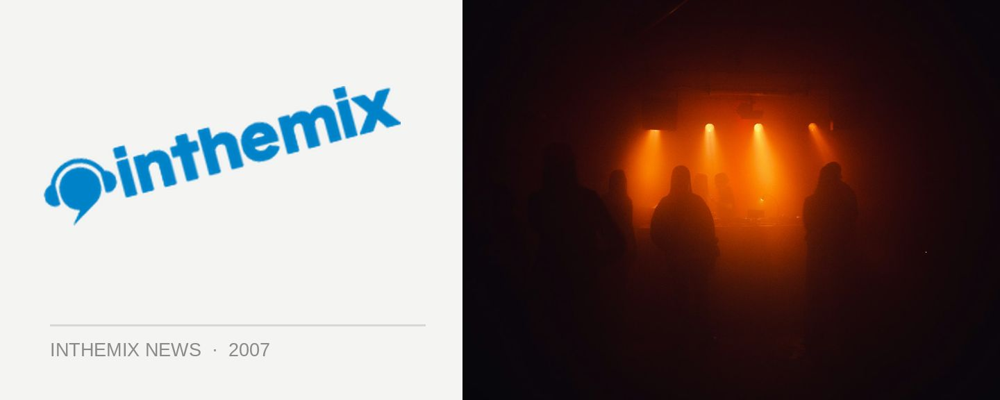

NIN Thursday night show postponed
Tonight’s show has been postponed, and with a big question mark hanging over tomorrow night’s performance as well, Nine Inch Nails fans will be crying into their tattered Downward Spiral t-shirts. No reason is know yet for the cancellation, but promoters Chugg promise that more info will be given as it comes to hand.
Last night’s show at the the Big Top apparently featured Trent Reznor in fine form, so it makes the cancellation all the more harder to bear. Fingers crossed that things work out and we’ll get to see them play after all…
Stay tuned to inthemix for more details as they come to hand.